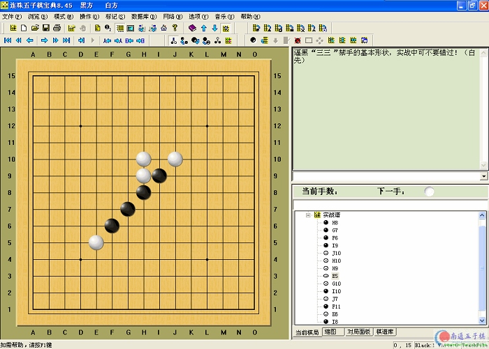

怎么找不到那个打谱的软件来下载啊？是不是要花钱啊？
怎么找不到那个打谱的软件来下载啊？是不是要花钱啊？
《连珠五子棋宝典》8.46版本增加对QQ棋谱的支持！
《连珠宝典》从8.45版本起，更名为《连珠五子棋宝典》，并改为免费软件。作者感谢各位用户的支持，特别感谢各位付费注册用户的支持！正是您的支持，给予了作者许多开发的动力。为了使更多的用户使用并了解《连珠宝典》，决定将软件改为免费版本。对于已注册的用户，作者将以提供更多的服务、技术支持作为回报。改为免费软件，并不意谓作者停止升级和维护，作者将一如既往地做好维护和升级。如果条件成熟，作者也许会继续将软件做为共享软件发布。如果这样，所有付费用户将继续得到免费升级等优惠。希望棋友提出宝贵意见！更欢迎棋友提供棋谱和教程。
一个专业的连珠工具软件，具有打谱、推演棋谱变化、配参考图、网上对局、录入、打印棋谱、棋谱资料管理、棋谱格式转换、连珠教学等功能 ，支持联众、中游、基地城市、ORC游戏中心、黑石、five6连珠妙手、ZFIVE打谱软件棋谱。
打谱功能：打谱时，可以随意在谱中前进、后退、增加注解及配参考图，软件能够忠实记录你的每一步推演过程，使你研究棋谱更方便。
录入棋谱：支持注解、带参考图的棋谱的录入。
网上对局：网上对局使你可以不用任何服务器的支持，轻松实现网上对局。对局时，可任意预设棋局，并具有悔棋、封盘、续盘、交谈等功能。
资料管理：采用数据库技术管理棋谱资料，可随时导入、备份棋谱。使你对棋谱的分类、检索更方便，棋谱资料的保存更安全。
连珠教学：连珠教学功能，既有使你轻松入门的初级教程，也有使你全面提高的中级教程，软件的资料库、教程库将在连珠宝典的主页不断更新。
教程制作：连珠可以帮您制作各种连珠教程，您可以随意剪切、裁剪棋盘，将其保存为彩色、黑白图像，或将其送入系统的剪贴板中，与其它编辑软件交互使用。
连珠宝典8.40是作者应许多棋友的要求，将围棋助手8.40改编而成的。虽然她是作者发布的第一个版本，但是已经是一个功能强大、界面友好、性能稳定、成熟的版本。连珠宝典8.40完全继承了围棋助手8.40的先进设计思想及功能，既有围棋助手8.40的打谱制谱方便，棋谱管理功能强大的特色，又专门增加人机对局的功能。无论您是一位初学者还是一个业余棋手，连珠宝典一定会成为您的好帮手。
南通五子棋站下载 南通五子棋站下载〔在征得胡先生同意后，以绿色免安装版本发布，且内含一个松月的打谱范例〕
作者主站下载〔已经升级为8.46版本〕
作者主站地址：http://www.go-assistant.com/renju/
本页面接受对《连珠宝典》8.45版本《连珠五子棋宝典》的使用经验交流
其余无关内容请勿留言，我们将会整理网友留言的改进意见提交作者。
以下是和作者胡小奇先生Email交流的内容：
谢谢您对《连珠宝典》的关心与支持！刚访问您的网站，非常出色！如果能进一步宣传，当然是再好不过了。
由于今天上半年，单位工作很忙，一直没有对它升级，我想在下半年，工作会轻松一些，到时一定进行一些升级，许多棋友提出了很多宝贵意见，我将尽量改进。 当然，在相当长的一段时间内，还是会定在免费软件的，并且不捆绑插件。 希望您能对软件提出宝贵意见和建议。谢谢！提出：1、不能直接读取qq棋谱是一个遗憾
回答：这是我希望在下一版本中要完成的。已经有棋友将QQ棋谱的样本发给了我，如果没有QQ棋谱没有加密，则没有问题，如果加密了，则没有办法
提出：2、读取z5棋谱的时候若为多分支结构，则出错
回答：请您给我几个带分支的Z5的棋谱，以便我研究一下
提出：3、若能生成rena互动谱，则更有利于网络交流
回答：我还不了解rena互动谱，也希望您能给我几个样本。谢谢！
日前已经就上述三个问题和胡先生进行了进一步的沟通！
今日收到胡先生的邮件，新版本即将支持qq棋谱的读入。
两个字母的谱,能不能支持?
如B[ii];W[ij];B[jj].......
引用：
原文由 xr__ 发表于 2006-6-13 7:47:37 :两个字母的谱,能不能支持?
如B[ii];W[ij];B[jj].......
哪种软件生成的代码？提供详细信息，包括棋局截图配相应的代码文件。
http://www.littlegolem.net 都不知道
gomoku 水平最高的网站！！ 开局看似单调，其实变化很精彩！！
引用：
原文由 有志青年 发表于 2006-6-13 8:13:42 :引用：
原文由 xr__ 发表于 2006-6-13 7:47:37 :两个字母的谱,能不能支持?
如B[ii];W[ij];B[jj].......
哪种软件生成的代码？提供详细信息，包括棋局截图配相应的代码文件。
请将棋谱文件和相应的截图发给我，我将争取在下一版本中支持！
在此，真诚感谢版主对作者的支持，谢谢所有支持《连珠五子棋宝典》的朋友。
(;FF[4]EV[gmk.mc.2005.oct.2.4]PB[David J Bush]PW[Nevermind]SO[http://www.littlegolem.com];B[jj];W[ii];B[kf])
(;FF[4]EV[gmk.mc.2005.oct.2.4]PB[Nevermind]PW[Alpina]SO[http://www.littlegolem.com];B[jj];W[kk];B[nk];W[li])
(;FF[4]EV[gmk.mc.2005.oct.2.4]PB[qua]PW[Nevermind]SO[http://www.littlegolem.com];B[jj];W[ii];B[if])
(;FF[4]EV[gmk.mc.2005.oct.2.4]PB[Nevermind]PW[Anatolij]SO[http://www.littlegolem.com];B[jj];W[ki])
(;FF[4]EV[gmk.mc.2005.oct.2.4]PB[Arrow]PW[Nevermind]SO[http://www.littlegolem.com];B[jj];W[ii];B[hf])
(;FF[4]EV[gmk.ch.9.2.2]PB[siena]PW[Nevermind]SO[http://www.littlegolem.com];B[jj];W[kh];B[lf];W[ki];B[kj];W[li];B[mi];W[mj];B[jg];W[jh];B[ih];W[lj];B[mk];W[lk];B[lh];W[nk];B[ol];W[ni])
(;FF[4]EV[gmk.ch.9.2.2]PB[Nevermind]PW[lvf123]SO[http://www.littlegolem.com];B[jj];W[kk];B[nk];W[mj];B[mi];W[ll];B[ni];W[oi];B[nj];W[nh];B[ok];W[pl];B[mk];W[pk];B[ki];W[mg];B[nl])
(;FF[4]EV[gmk.ch.9.2.2]PB[vacsi]PW[Nevermind]SO[http://www.littlegolem.com];B[jj];W[lh];B[ni];W[lj];B[lk];W[mj];B[nj];W[mk];B[nl];W[nk];B[li];W[ml];B[mi];W[ki];B[jh];W[lm];B[kn];W[ol];B[ok];W[pi];B[oj];W[pm];B[qn];W[mm];B[mn];W[nm];B[om];W[pl];B[pj];W[pk];B[qj])
(;FF[4]EV[gmk.ch.9.2.2]PB[Nevermind]PW[Styler]SO[http://www.littlegolem.com];B[jj];W[ik];B[fk];W[gj];B[il];W[jl];B[hj];W[ii];B[hm];W[gl];B[gn];W[fo];B[fm];W[el];B[hl];W[hk];B[fj];W[fl];B[im];W[gk];B[gm];W[jm];B[em])
(;FF[4]EV[gmk.ch.9.2.2]PB[Maverl]PW[Nevermind]SO[http://www.littlegolem.com];B[jj];W[lh];B[kf];W[li];B[lj];W[kj];B[kk];W[mh];B[ng];W[nh];B[kh];W[jk];B[il];W[im];B[ii];W[hh];B[kg];W[ki];B[lf];W[jh];B[mf];W[oh];B[ph];W[nf];B[if];W[jf];B[ih];W[mg];B[oe];W[ig];B[ij];W[ik];B[lg];W[ji];B[ke];W[kd];B[ne];W[od];B[le];W[jg];B[me])
(;FF[4]EV[gmk.ch.9.2.2]PB[Nevermind]PW[cortona]SO[http://www.littlegolem.com];B[jj];W[lh];B[ng];W[mi];B[li];W[mh];B[mg];W[lg];B[nh];W[ni];B[kf];W[kg];B[jf];W[oj];B[pk];W[nj];B[ok];W[mj];B[pj];W[mk];B[ml];W[oi];B[ph];W[pi];B[qi];W[lj])
(;FF[4]EV[gmk.ch.9.2.2]PB[dream26]PW[Nevermind]SO[http://www.littlegolem.com];B[jj];W[ki])
(;FF[4]EV[gmk.ch.9.2.2]PB[Nevermind]PW[Anatolij]SO[http://www.littlegolem.com];B[jj];W[ki];B[lf];W[ii];B[li];W[kh];B[kj];W[mh];B[lj];W[ij];B[ji];W[ih];B[ig];W[lh];B[jh];W[jk];B[jf];W[jg];B[ke];W[ld];B[kf];W[if];B[jd];W[mg];B[ic];W[hb];B[kc];W[kg];B[kd];W[kb];B[lg];W[mj];B[nf];W[mf];B[mi];W[kl];B[lm];W[lk];B[jm];W[oh];B[nh];W[ni])
(;FF[4]EV[gmk.ch.9.2.2]PB[Andrey]PW[Nevermind]SO[http://www.littlegolem.com];B[jj];W[lh];B[ng];W[mi];B[kg];W[mg];B[mh];W[li];B[ni];W[lg];B[lf];W[nf];B[ki];W[lj];B[lk];W[og];B[kk];W[oe];B[pd];W[oh];B[of];W[me];B[ph];W[pe];B[ne];W[ld];B[kc];W[ji];B[ii];W[hh];B[ik];W[jk];B[kj];W[kh];B[ll];W[mm];B[kl];W[km];B[hl];W[gm];B[il];W[jl];B[ij])
(;FF[4]EV[gmk.ch.9.2.2]PB[Nevermind]PW[extasy]SO[http://www.littlegolem.com];B[jj];W[lh];B[ng];W[mj];B[li];W[mh];B[mi];W[ni];B[oh];W[oj];B[pk];W[mf];B[jh];W[kf];B[lg];W[jg];B[le];W[lf];B[nf];W[og];B[lj];W[ki];B[kk];W[jl];B[ll];W[ii];B[mm];W[nn];B[lm];W[lk])
(;FF[4]EV[gmk.ch.9.2.2]PB[veni_vidi_vici]PW[Nevermind]SO[http://www.littlegolem.com];B[jj];W[ki];B[lf];W[kh];B[kk];W[ii])
嗯，后来一直没有和作者联系，极地和作者联系过，他怎么说？
不过，在我看来连珠五子棋宝典不可能支持lib文件，因为连珠五子棋宝典自身的格式也是一种多分支的，但是结构和lib完全不同，不可能同时存在。
好象是去年夏天吧~他说会考虑来着。。。加了LIB，对新手练棋就方便落~毕竟好象这玩意前身就是一围棋好软来着~
作者不更新了？
怎么找不到那个打谱的软件来下载啊？是不是要花钱啊？
能将棋盘15路改成19路大棋盘吗
不好意思，这提议有点冒昧
但是五子棋的规则在不久的将来应该会更改，小棋盘改为大棋盘的可能性不是没有，所以在此斗胆向胡小奇先生提了上述那个建议，请务必考虑看看
五子宝典跟爱五子棋，两个打谱不知道选哪个呵
音乐播放的时候有点小问题,不知道是我电脑的问题还是软件的问题.这软件功能真的很强